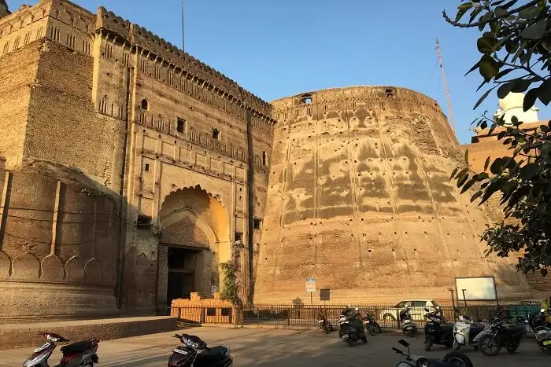
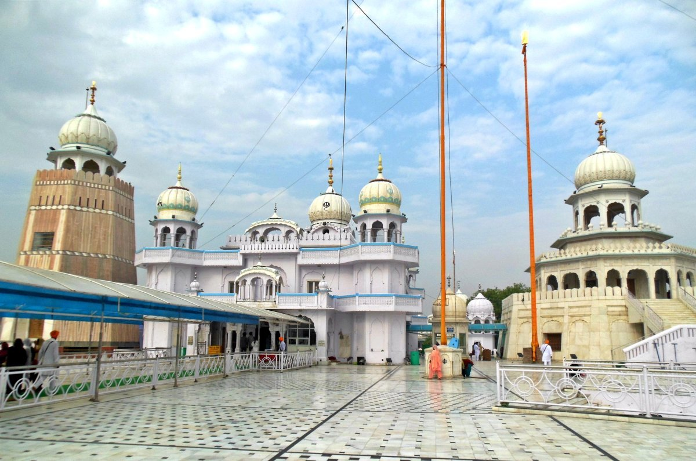

Bathinda Fort
Bathinda Fort is a historic fort that dates back to the 6th century. It is known for its impressive architecture and rich history.
Fun Fact:
~The fort has witnessed many battles and has been a silent witness to the region's history!
Things to Explore at Bathinda Fort:
-
Ancient Walls:
Walk along the ancient walls and enjoy panoramic views of the city.
-
Museum:
Visit the museum inside the fort that showcases artifacts from different eras.
-
Light and Sound Show:
Experience the mesmerizing light and sound show that narrates the fort's history.
-
Gardens:
Relax in the beautifully landscaped gardens surrounding the fort.
Why Visit Bathinda Fort?
!Because it’s not just a fort; it’s a journey through time, offering a glimpse into Punjab’s glorious past.

Bathinda Lake
Bathinda Lake is a serene and picturesque lake that offers a perfect escape from the hustle and bustle of city life. It is surrounded by lush greenery and is ideal for picnics and leisurely walks.
Fun Fact:
~The lake is home to various migratory birds, making it a paradise for birdwatchers!
Things to Explore at Bathinda Lake:
-
Boating:
Enjoy a peaceful boat ride on the tranquil waters of the lake.
-
Birdwatching:
Observe various species of migratory birds that flock to the lake.
-
Picnic Spots:
Relax and have a picnic in designated areas around the lake.
-
Walking Trails:
Take leisurely walks along the scenic trails surrounding the lake.
Why Visit Bathinda Lake?
!Because it’s not just a lake; it’s a serene oasis that offers tranquility and natural beauty, perfect for unwinding and reconnecting with nature.

Chetak Park
Chetak Park is a beautiful park that offers a peaceful retreat in the heart of the city. It is known for its lush greenery, well-maintained gardens, and recreational facilities.
Fun Fact:
~The park is named after Chetak, the legendary horse of Maharana Pratap!
Things to Explore at Chetak Park:
-
Lush Gardens:
Stroll through the beautifully landscaped gardens filled with vibrant flowers.
-
Recreational Facilities:
Enjoy various recreational activities such as jogging, cycling, and picnicking.
-
Children's Play Area:
Let your kids have fun in the dedicated play area with swings and slides.
-
Serene Atmosphere:
Relax and unwind in the peaceful ambiance of the park.
Why Visit Chetak Park?
!Because it’s not just a park; it’s a green haven that offers a perfect blend of nature and recreation, making it an ideal spot for families and nature lovers.

Dhobi Bazaar
Dhobi Bazaar is a bustling market known for its vibrant atmosphere and a wide range of goods. It is a great place to experience the local culture and shop for traditional items.
Fun Fact:
~The market is famous for its colorful stalls selling everything from clothes to handicrafts!
Things to Explore at Dhobi Bazaar:
-
Local Handicrafts:
Shop for unique handicrafts and souvenirs made by local artisans.
-
Traditional Clothing:
Explore stalls selling traditional Punjabi attire and accessories.
-
Street Food:
Indulge in delicious street food offerings that reflect the local cuisine.
-
Cultural Experience:
Immerse yourself in the vibrant culture and lively atmosphere of the market.
Why Visit Dhobi Bazaar?
!Because it’s not just a market; it’s a cultural hub that offers a glimpse into the local lifestyle, making it an exciting destination for shoppers and culture enthusiasts alike.

Mausoleum of Nawab
The Mausoleum of Nawab is a historical monument that pays tribute to the Nawab of Bathinda. It is known for its architectural beauty and historical significance.
Fun Fact:
~The mausoleum is a fine example of Indo-Islamic architecture and is surrounded by lush gardens!
Things to Explore at Mausoleum of Nawab:
-
Architectural Marvel:
Admire the intricate carvings and beautiful domes of the mausoleum.
-
Historical Significance:
Learn about the life and legacy of the Nawab through informative displays.
-
Peaceful Gardens:
Take a leisurely stroll in the serene gardens surrounding the mausoleum.
-
Cultural Heritage:
Experience the rich cultural heritage of Bathinda through this historical site.
Why Visit Mausoleum of Nawab?
!Because it’s not just a monument; it’s a tribute to the region's history and culture, offering a peaceful retreat for history buffs and nature lovers alike.

Gurdwara Damdama Sahib
Gurdwara Damdama Sahib is a significant Sikh pilgrimage site that holds immense religious importance. It is known for its serene ambiance and spiritual significance.
Fun Fact:
~The gurdwara is built on the site where Guru Gobind Singh Ji compiled the Guru Granth Sahib!
Things to Explore at Gurdwara Damdama Sahib:
-
Spiritual Experience:
Participate in the daily prayers and experience the spiritual atmosphere.
-
Langar:
Enjoy the community meal (langar) served to all visitors, regardless of their background.
-
Historical Significance:
Learn about the history and significance of the gurdwara through informative displays.
-
Peaceful Environment:
Relax in the peaceful surroundings and reflect on your spiritual journey.
Why Visit Gurdwara Damdama Sahib?
!Because it’s not just a gurdwara; it’s a spiritual haven that offers solace and a deeper understanding of Sikhism, making it a must-visit for spiritual seekers and tourists alike.

Bathinda Museum
Bathinda Museum is a treasure trove of artifacts and exhibits that showcase the rich history and culture of the region. It is a must-visit for history enthusiasts and anyone interested in learning about Punjab's heritage.
Fun Fact:
~The museum houses a vast collection of ancient coins, sculptures, and manuscripts!
Things to Explore at Bathinda Museum:
-
Historical Artifacts:
Explore the extensive collection of artifacts that date back to ancient times.
-
Cultural Exhibits:
Learn about the diverse cultures and traditions of Punjab through informative displays.
-
Archaeological Finds:
Discover archaeological finds that shed light on the region's history.
-
Educational Programs:
Participate in educational programs and workshops organized by the museum.
Why Visit Bathinda Museum?
!Because it’s not just a museum; it’s a gateway to understanding Punjab's rich heritage, making it an enriching experience for visitors of all ages.

Dhobi Talao
Dhobi Talao is a historic water tank that has been a part of Bathinda's heritage for centuries. It is known for its architectural beauty and historical significance.
Fun Fact:
~The tank was used by washermen (dhobis) for centuries, giving it its name!
Things to Explore at Dhobi Talao:
-
Historical Significance:
Learn about the history and significance of the tank through informative displays.
-
Architectural Beauty:
Admire the intricate architecture and design of the tank.
-
Scenic Views:
Enjoy the serene views of the surrounding area from the tank.
-
Cultural Heritage:
Experience the cultural heritage of Bathinda through this historical site.
Why Visit Dhobi Talao?
!Because it’s not just a water tank; it’s a piece of Bathinda's history that offers a glimpse into the region's past, making it an interesting stop for history buffs and tourists alike.

Rani Mahal
Rani Mahal is a historic palace that was once the residence of the queens of Bathinda. It is known for its architectural beauty and historical significance.
Fun Fact:
~The palace is adorned with intricate carvings and beautiful frescoes!
Things to Explore at Rani Mahal:
-
Architectural Marvel:
Admire the intricate carvings and beautiful frescoes adorning the walls.
-
Historical Significance:
Learn about the history and significance of the palace through informative displays.
-
Scenic Views:
Enjoy breathtaking views of the surrounding landscape from the palace.
-
Cultural Heritage:
Experience the rich cultural heritage of Bathinda through this historical site.
Why Visit Rani Mahal?
!Because it’s not just a palace; it’s a masterpiece of architecture that tells the story of Punjab’s rich heritage, making it a must-visit for history enthusiasts and tourists alike.